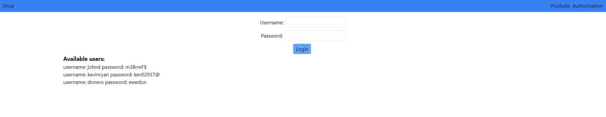
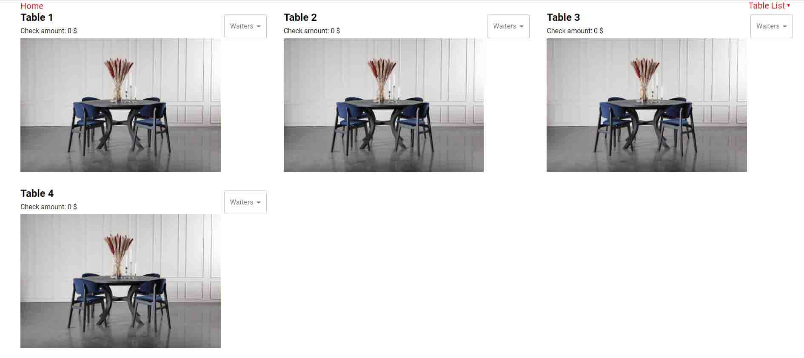

My projects
React / Typescript application "Shop"
Main page

Authorization page
It is my application, that I make with React and used Typescript for more effective and correctly write code. I get data from API ( fakestoreapi.com ) and write them in database redux/toolkit with using axios. I used material UI ( tailwindcss.com ) for at make it more beautiful and responsive. It makes with react-router-dom, so it is SPA (Single page application)
Link in github
React application "Restaurant management"

It is my application, that I make with React JS. I get data from API ( mockapi.io ) and write them in database (react-redux). I used material UI from ( mui.com ) for at make it more beautiful and responsive. It makes with react-router-dom, so it is SPA (Single page application)
Link in github
React application "Currency converter"

It is my application, that I make with React JS. I get data from API and write them in database (react-redux), show them in the table and use for calculate. I used material UI from ( mui.com ) for at make it more beautiful and responsive.
Link in github
Last project from kurs
This was a web page from my hmtl / css course. Here I have some knowledge about html, css and how to work with it. I used more js for this web page and I was very happy because I learned it myself. Here you can see the main web page, but
you can always click on the links below and see my project online. This project works in three languages because it was in the layout. I did my best to make it work because I like the way my web page works. The page is adaptive,
which is very convenient because you can view the page from any device and it will always be comfortable to view. Click on the link below, and look at my work with pleasure :)
Link in github
Project from kurs,but it was one of tasks

It was also a site from my HTML / CSS course, where I first used JS for "Menu Burger" and realized it wasn't as complicated as I imagined. With the acquired knowledge, I could already make such easy sites on one page, and even using already
a little JavaScript. By clicking on the link below, you can see what my first site was :)
Link in github